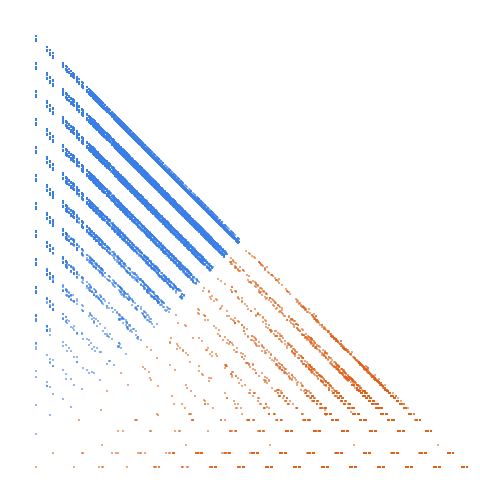

Moser-de Bruijn sequence: sums of distinct powers of 4

Open in the 3-D viewerA000695 on the OEIS
| Terms | 100,000 (n = 0 … 99,999) |
|---|---|
| Decomposable (a > 2d) | 99,983 |
| Level class, k > L | 13,956 · 13.96 % |
| Weight class, k ≤ L | 86,027 · 86.04 % |
| Ties, k = L | 0 |
| On the level line L = 1 | 5,112 |
| Forced level, l ≤ d² | 434 |
| Range of a(n) | 0 … 5,370,036,565 |
| Range of the jump d | 1 … 2,863,311,531 |
| Largest weight k, level L | 5,370,036,547, 1,790,012,181 |
Sums of distinct powers of 4: binary n read in base 4. The gaps are (2*4^j + 1)/3 = 1, 3, 11, 43, ... The level share is 13.96 %; L = 1 and L = 2 hold 73 % of the level class. No ties.
The decomposition
Every term of a strictly increasing sequence is written a(n) = k(n)·L(n) + d(n): the jump d = a(n+1) − a(n), the weight k the least divisor of a − d greater than d, the level L = (a − d)/k. A term decomposes when a > 2d; it is in the level class when k > L and in the weight class when k ≤ L. See decompwlj.com and arXiv:0711.0865.